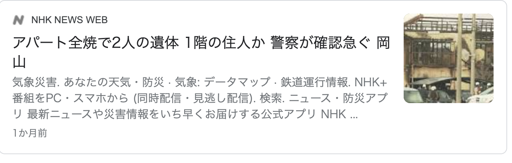

<ons-page id="news.html">

  <ons-toolbar>
    <div class="center">ニュース</div>
  </ons-toolbar>

  <style>
    img {
    max-width: 100%;
    height: auto;
    }
  </style>

  <script>
  function news1() {
    window.open("https://www.sanyonews.jp/article/1089116", '_blank', 'location=yes');
    return false;
  }
  function news2() {
    window.open("https://www.yomiuri.co.jp/local/okayama/news/20210111-OYTNT50006/", '_blank', 'location=yes');
    return false;
  }
  function news3() {
    window.open("https://www.sanyonews.jp/article/1086068", '_blank', 'location=yes');
    return false;
  }
  </script>

    <a href="#" onclick="news1();"></a>
    <a href="#" onclick="news2();"></a>
    <a href="#" onclick="news3();"></a>
    <a href="https://www.sanyonews.jp/article/1087043"></a>
    <a href="https://www.drone.jp/news/2020122515301342126.html"></a>
    <a href="https://www.niigata-nippo.co.jp/news/politics/20210111592425.html"></a>
    <a href="https://www3.nhk.or.jp/news/html/20201223/k10012779721000.html"></a>
    <a href="https://mainichi.jp/articles/20210110/k00/00m/040/070000c"></a>
    <a href="https://www3.nhk.or.jp/news/html/20201201/k10012739471000.html"></a>
    <a href="https://prtimes.jp/main/html/rd/p/000000090.000018933.html"></a>

</ons-page>
